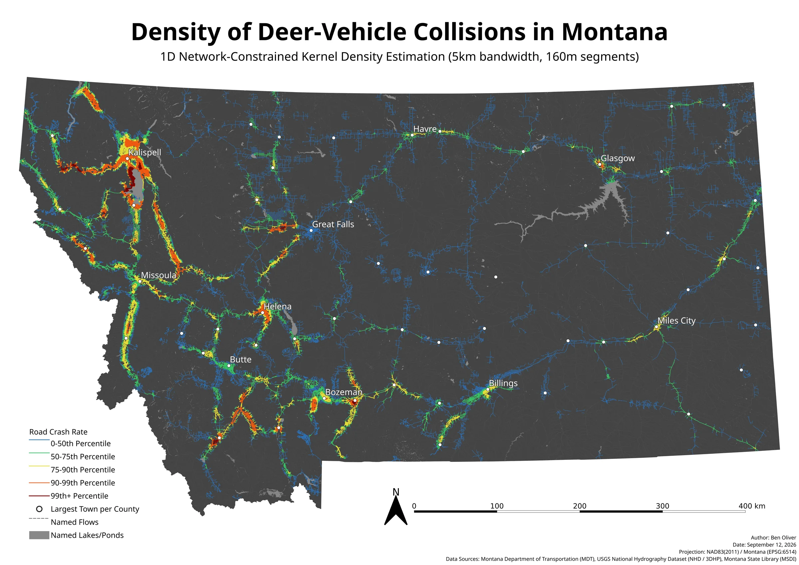
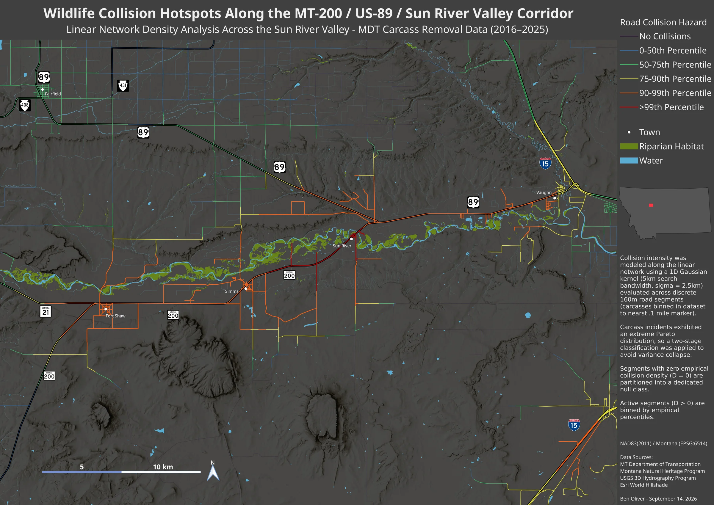
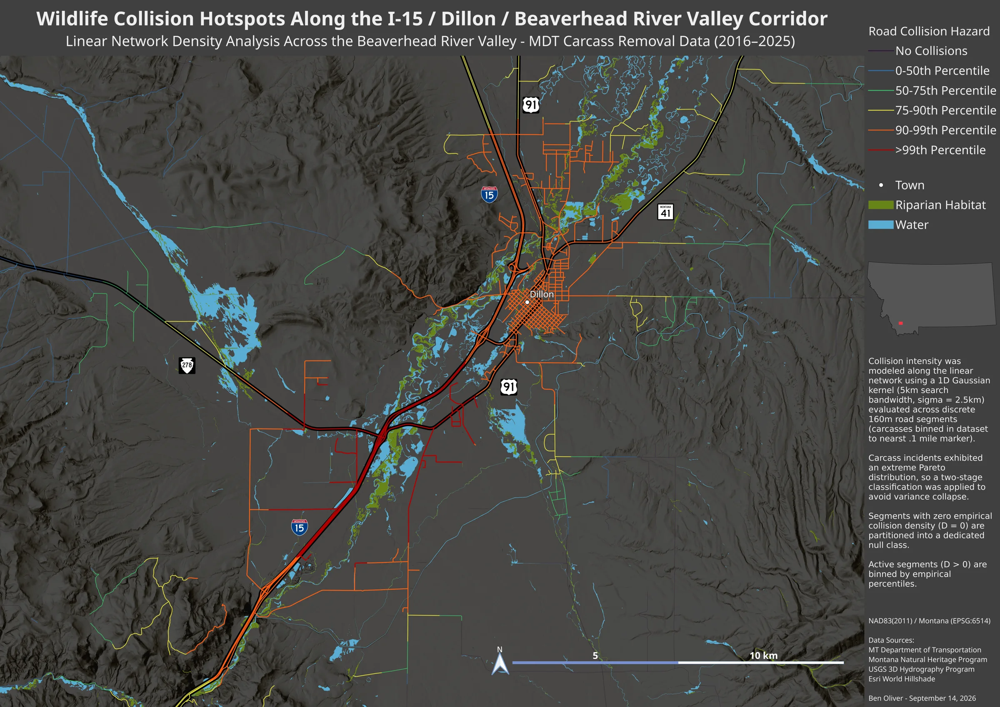

Deer-vehicle collisions and river corridors in Montana
Where on Montana's roads do drivers hit deer most often, and how much of that comes down to roads running close to rivers and streams?
I took Montana Department of Transportation carcass-removal records from 2016 to 2025, estimated collision density along every road in the state, cut into 160 m segments, and compared the worst stretches with their distance to perennial water and riparian habitat. On highways, collision rates within 250 m of perennial water run about twice what they are a kilometer or more away, and over half of the top 1% of segments sit within 200 m of water.
The maps were made in QGIS and exported at about 14,000 px wide, so open them at full size to zoom into individual roads.


Density of deer-vehicle collisions in Montana
Collisions concentrate in the western river valleys, where mountains squeeze highways, riparian habitat and deer into the same narrow corridors. East of the divide, risk rises mainly where highways follow big rivers, like US-2 along the Milk and I-94 along the Yellowstone.


Wildlife collision hotspots along the MT-200 / US-89 / Sun River Valley corridor
Few people live here, yet the stretch of MT-200 between Fort Shaw and Vaughn is in the top 1% statewide. Risk drops where the highway swings away from the river near Simms, and peaks where it runs beside and across the riparian canopy.


Wildlife collision hotspots along the I-15 / Dillon / Beaverhead River Valley corridor
A divided, four-lane interstate, and still in the top 1% where it crosses and parallels the Beaverhead's riparian corridor. The highest-risk segments line up with the riparian habitat here too.